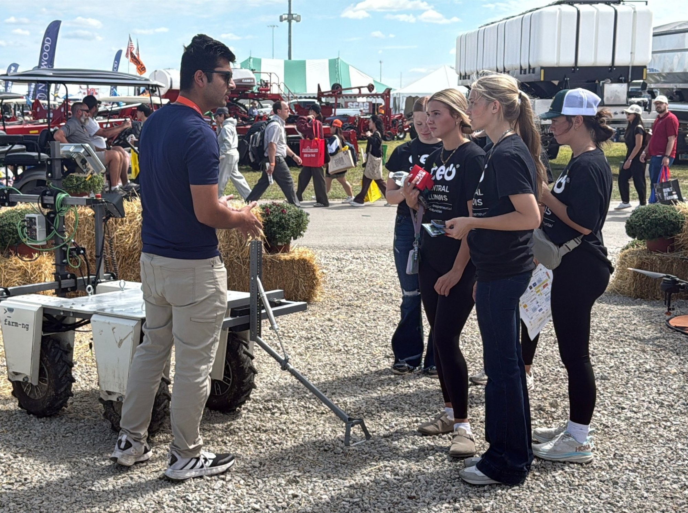
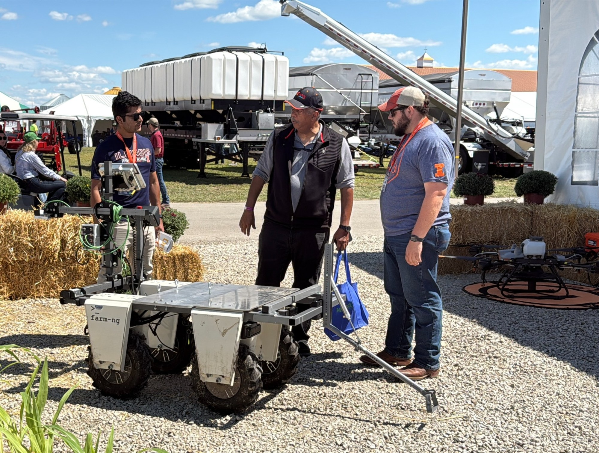
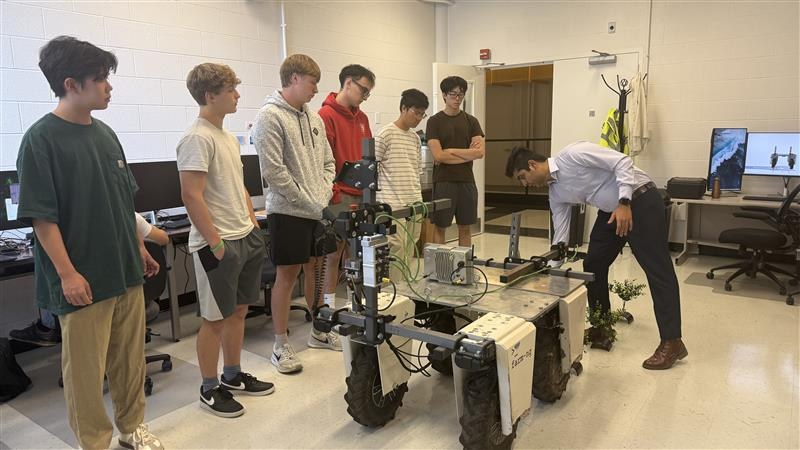

Robotics & autonomy
Integrating perception, navigation, and actuation for site-specific mechanical weeding.
I’m Sandesh Poudel, a PhD researcher at the University of Illinois Urbana-Champaign, connecting intelligent systems with practical agricultural engineering.

My work brings robotics, computer vision, and field engineering together to make precision agriculture more accessible. I am pursuing my PhD under Dr. Sunoj Shajahan ↗ in the Digital Precision Agriculture Lab ↗. My research integrates georeferenced horseradish stand counts, computer vision, and site-specific mechanical weeding on the Farm-ng Amiga platform.
My journey began in Nepal and continued through graduate research at the University of Georgia, doctoral work in Illinois, and a research fellowship at the University of Bonn. Along the way, I’ve focused on making digital technologies useful for agriculture.
Integrating perception, navigation, and actuation for site-specific mechanical weeding.
Using drone and camera imagery to connect field conditions with robotic decisions.
Bringing together mechanical design, sensor integration, and digital fabrication.
Developing practical approaches for specialty crops and technology adoption.
From digital perception to physical action, I work across the technologies that connect an agricultural idea to a field-ready system.
Integrating crop and weed detection, row-following, and mechanical actuation on an agricultural robot.
Explore the researchQuantifying horseradish stand count and spatial distribution from georeferenced UAV imagery using QGIS, traditional computer vision, and GeoAI.
Explore the analysisStudying digital technology readiness, sharing knowledge, and mentoring students in engineering research.
Explore the frameworkDeveloping site-specific autonomous mechanical weeding on the Farm-ng platform; analyzing drone imagery for navigation and targeted application; and designing modular attachments for real-time assessment and field evaluation.
Developed computer vision models for image segmentation at the Institute of Geodesy and Geoinformation for later integration into a robotic weeding system.
Developed a Digital Agriculture Technology Readiness Level framework and a 3D printing training manual for farmers and STEM education students.
Supervised and monitored sub-engineers across 13 districts in Bagmati Province, supporting agricultural infrastructure design, construction, and procurement inspections. Earlier, collected wheat production and machinery-use data with CIMMYT in 2019.
International recognition for research at the intersection of digital technologies and sustainability, with a research stay at the University of Bonn.
Awardee profile ↗Foundation for Food & Agriculture Research fellowship supporting research and professional development in food and agriculture.
Explore the fellowship StoryMap ↗Illinois Office of Data Science Research feature on our specialty-crop robotics research.
Read the feature ↗Explore the visual story and geospatial context of my work.
Open ArcGIS StoryMap ↗Coverage of the 2025 award and my work in digital agriculture.
Read the coverage ↗As a Grainger Graduate Student Ambassador ↗, I support prospective students and share my experience of graduate engineering at Illinois. I mentor both undergraduate and graduate students, supporting research development, technical learning, and academic growth. I also communicate agricultural robotics research through demonstrations.
I have delivered guest lectures in ABE 127 and ABE 498 at UIUC. I mentor undergraduate and graduate students through research, technical learning, academic writing, and professional development, including UIUC’s CDA REU, MUSE, Doctoral Research Support, and ESL 515 programs. At UGA, I also mentored undergraduate research in 3D printing.
My service includes representing graduate students in the UIUC Senate (January–July 2025), leading the Nepalese Student Association at UGA (2023–2024), and serving as president of the LEO Club of Dharan Vijayapur (2017–2018).


